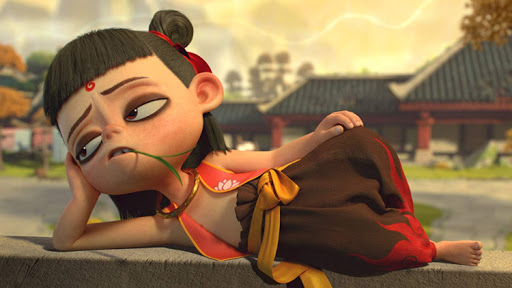
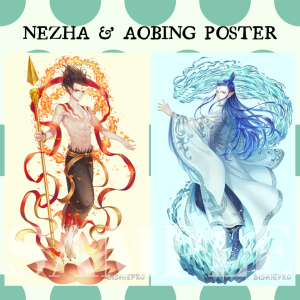

About
Ne Zha, also spelt as Nezha, is a 2019 Chinese 3D computer animation fantasy adventure film directed and written by Jiaozi. Its animation production is done by the director's own Chengdu Coco Cartoon. Featuring the popular Chinese mythological character Nezha, the plot is loosely based on the classic 16th-century novel Investiture of the Gods, attributed to Xu Zhonglin.
It was released in China exclusively in IMAX and China Film Giant Screen theatres on 13 July 2019, followed by other theatres on 26 July, distributed by Beijing Enlight Pictures. It is the first Chinese-produced animated feature released in IMAX format, and, despite being the debut feature of its director and animation studio, and having no widely known actors in its voice cast, it has been one of the biggest commercial successes in Chinese cinema, setting numerous records for box-office grosses: as of August 2019, the film is the highest-grossing animated film in China, the worldwide highest-grossing non-U.S. animated film, and the second worldwide highest-grossing non-English-language film of all time. With a gross of over $725 million, it is the fourth-highest-grossing animated film of that year and the second-highest-grossing film of all time in China.
It began a North American release on 29 August 2019 in select IMAX 3D theatres, before a nationwide rollout on 6 September. It was selected as the Chinese entry for Best International Feature Film at the 92nd Academy Awards, becoming the first animated film from China to ever do so, but it was not nominated.
A second film set in the same universe, titled Legend of Deification, was scheduled to release in January 2020 in China. No new release date for the film has been announced due to the COVID-19 pandemic.
Plot
A Chaos Pearl, birthed from primordial essences, begins siphoning energies gluttonously. Yuanshi Tianzun dispatches his disciples Taiyi Zhenren and Shen Gongbao to subdue the sentient pearl. Due to its ability to absorb energy, Taiyi and Shen are unable to gain the upper hand. Eventually Tianzun separates the pearl into two opposite components: the Spirit Pearl and the Demon Orb. Tianzun places a heavenly curse upon the Demon Orb: in three years time it will be destroyed by a powerful lightning strike. Tianzun then instructs Taiyi to take the Spirit Pearl to be reincarnated as the third son of Li Jing, to be named Ne Zha.
Shen conspires to steal the Spirit Pearl and in the ensuing battle, the Demon Orb is placed on the ritual altar instead, causing Li Jing's pregnant wife Lady Yin to give birth to a child, Ne Zha, whose demonic nature is apparent. Taiyi tells them that Ne Zha's fate is sealed: in three years' time the heavenly curse placed upon the Demonic Orb will kill him regardless. Li travels to Heaven with Taiyi in an attempt to plead for Ne Zha's life, but is told that the curse is unremovable.
Meanwhile, it is revealed that Shen stole the Spirit Pearl for the Dragon King to reincarnate as his son, Ao Bing. The dragons resent their role as jailers of the Heavenly Court and being confined to a hellish existence on the ocean floor. They hope that through the blessed nature of a son born from the Spirit Pearl that dragon kind would be deemed worthy by Heaven, allowing the dragons to ascend. The Dragon King allows Shen to take Ao Bing as a student.
To tame his demonic nature and to make him happy, Ne Zha's parents lie to him, telling him that he was born of the Spirit Pearl and is destined to be a great demon hunter. Ne Zha studies under Taiyi and acquires great skills. Eventually becoming impatient, the impetuous Ne Zha escapes his confines to hunt demons. While chasing a water demon, he burns down a fishing village. Ao Bing also comes to fight the demon, but is eventually defeated. Ne Zha cleverly overcomes the water demon and rescues both Ao Bing and a little girl, but is nevertheless misunderstood by the townsfolk. In a rage, Ne Zha lashes out at the villagers, hurting many of them.
The Li household organizes a lavish birthday party for their son, inviting a nervous town to attend. Shen visits Ne Zha before the party, revealing the truth of his nature to him. Angry and upset, Ne Zha unleashes his true demonic form and nearly kills his father. Feeling betrayed, Ne Zha leaves to await his fate.
Shen says that if his deceit is revealed to Tianzun then not only will he be punished, all of dragon kind will be condemned forever. Ao Bing, not wanting to betray his kind, decides to bury the town alive under a massive sheet of ice so there are no witnesses. Meanwhile, Ne Zha learns that while visiting Heaven to plead for his life, his father sought an enchantment that would allow him to trade his life for Ne Zha's. Moved by his father's sacrifice, Ne Zha returns to the village to stop Ao Bing. Eventually unleashing his full demonic form, Ne Zha defeats Ao Bing but spares his life, calling him his only friend.
When the heavenly lightning approaches, Ne Zha surrenders to his fate but is unexpectedly joined by Ao Bing. Linking hands, they unleash the power of the Chaos Pearl, which has the ability to absorb energy. Their mortal bodies prove too weak to contain the energy of the strike. Though their bodies are destroyed, the townsfolk kneel before Ao Bing and Ne Zha in their spirit forms.
In the mid and post credits scenes, the Dragon King vows vengeance on the citizens of Chentangguan for what happened to Ao Bing, while in an unknown location, Jiang Ziya is introduced.
Production
Inspiration
The film tells the mythological origins of Nezha, who is a protection deity in Chinese folk religion, and its story is loosely based on the literary version of the myth that forms two chapters of Investiture of the Gods, a Ming-dynasty shenmo novel, traditionally attributed to Xu Zhonglin, which incorporates various existing myths into a wider narrative.
The story has been adapted for the screen many times before, at least as early as 1927 or 1928, whether on its own (as in the 1979 traditionally-animated film Nezha Conquers the Dragon King) or as part of adaptations of the whole of Investiture of the Gods (such as the 2016 live-action film League of Gods).
Pre-production
Director Jiaozi spent two years in total to write the screenplay, and the film was in production for three years.
Animation production
The film has more than 1,318 special effects shots, and it took over 20 Chinese special effects studios, employing more than 1,600 people, to realize the film's fairy tale setting, the mysterious Dragon King's Palace, and a complex fight between fire and water. One scene alone took two months to complete.